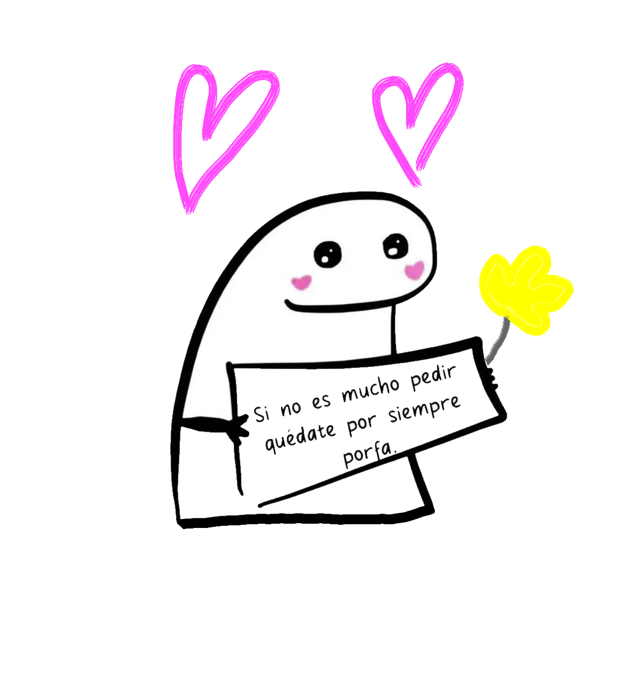
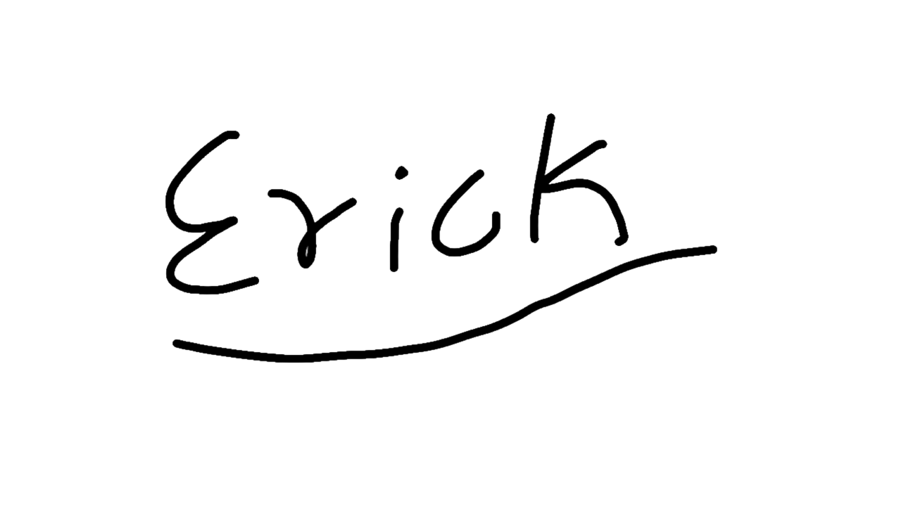

9/11/2025
Para Esbeidy 
Esta vez quería escribirte cosas que normalmente no digo por vergüenza o que simplemente me cuestan expresar:
Creo que eres una persona realmente maravillosa, tienes todo cualquiera querría tener en su vida.Ante mis ojos eres perfecta y lo que tú llamas
Probablemente no me vas a entender en este punto, pero no sabes lo feliz que me despierto en las mañanas sabiendo que podré verte una vez más, realmente se siente muy bien tener a alguien especial en mi corazón, jaja jamás creí que iría a trabajar tan feliz. No se que pensaras más específicamente de mí, no me lo haz dicho muy a fondo, pero espero ser alguien especial para tí. De ser así... Hmmmm... piénsalo ¿si? Se que puedo no ser la mejor opción pero te daré todo de mí. Aunque dices que la edad es un problema para mí no lo es, no hagas caso a lo que digan los demás, a final de cuentas solo estaremos aquí una vez, sea cual sea el tiempo que vivamos, se va a terminar y no creo conveniente pensar en los demás antes que en nosotros mismos. Pero bueno, esa es mi opinión, como dije, no se exactamente que pienses de mí. Pero si te gustaría al igual que mí, crecer juntos ¡Hagamozlo! No tiene que ser ahora mismo, claro, pero si me gustaría que sea algún día, te daré la mano y si decides seguirme, recorreremos la vida juntos por siempre
Probablemente no me creíste cuando te dije que solo tenias que cambiar tú forma de verte a tí misma. Lo dije de verdad, te juro que para mí, es lo único que deberías de cambiar de tí. Tú forma de expresarte de tí no me agrada, y es que eres muy hermosa como para estar pensando eso. Cuando te sientas "fea" o "gorda" como dices, recuerda que aquí hay alguien que piensa que eres perfecta tal cuál eres. Recuerda que hay alguien a quien haces feliz con un "Buenos días", hay alguien que siente que el corazón se le sale cuando está cercas de tí y también hay alguien que se muere de ganas de ser y vivir para tí.
También creo que no me creíste que te quiero un 10. Bueno, tampoco mentí. Pero ¿Por qué lo dije? Por qué lo siento, porque nunca me había sentido así y es un poco raro, jamás me ví escribiendo carta, y aquí estoy. Estoy escribiendo con mi corazón, no con mis dedos y lo que siento es un gran amor por tí, unas ganas inmensas de abrazarte y nunca soltarte, por alguna razón me dan muchísimas ganas de sacar todo lo que siento y decírtelo. Si pudiera volar y gritar a todos que eres la mujer de mi sueños créeme que lo haría. Jamas había sentido tantas ganas de estar con alguien y darlo todo, pero sabes, tampoco había sentido tanta impotencia en mi vida, la impotencia de tener que decir "nos vemos" y no "¿nos vamos?", de tener que decir "con cuidado" y no "yo te cuido", ni la impotencia de no poder tenerte entre mis brazos a cada instante y para siempre. Sé siente feo pero a la vez bien, te veo sonreír y me reinicio, de repente estoy feliz de nuevo, cuando estoy contigo pienso con el corazón, mi cerebro se apaga en ese instante y nada me importa más que tú.
Ah jajaja, si lo que dice Moy te molesta, "es mi esposa", mejor se la mía y así no dirá eso, digo, es un consejo jaja, Esposa de Erick y no de Moy. Si si me gusta como suena eso. ¿Donde firmo?.
Tengo unos videos que me gustaría mandarte, pero los tendrían que ver los intermediarios, así que aprovecho para ponerlos: ¿Sabes que es más grande que el univers? Si no es mucho pedir... Con ganas de todo Tienes todo Por siempre

Se que no te gusta mi música, pero dedicar una canción que no conozco se me haría hipócrita, así que te muestro una de las que si conozco
Imagine Dragons - Follow You
- Te seguiré a donde sea que tú vayas, te seguiré hasta lo más bajo - Siempre estaré por donde sea que la vida te lleve, sabes que yo te seguiré - Quiero llevarte a la luz del sol - Desearía poder arreglarlo, podría arreglarlo por ti - Te seguiré a lo profundo, a donde sea que vayas -Siempre te seguiré
Esto es lo que tenía que decir, espero que te haya gustado tanto cómo a mí hacerlo para tí.

De tú mayor fan
Te Quiero Mucho